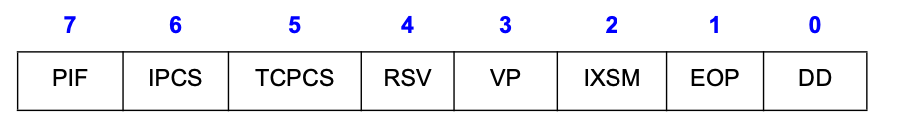
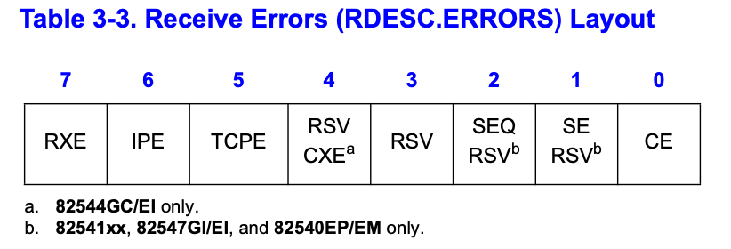
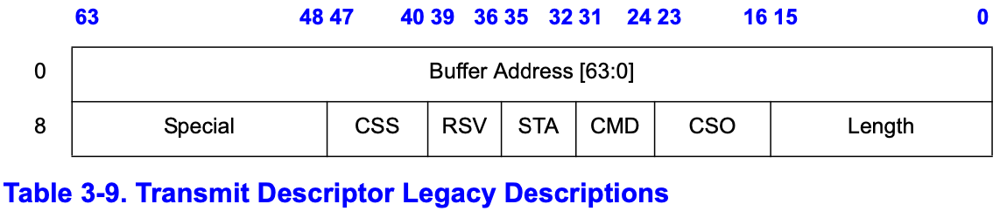
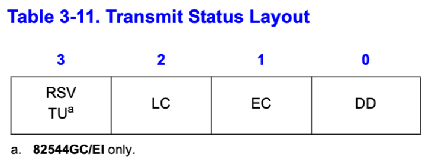

E1000网卡
网卡架构概述
介绍
这一章将介绍PCI/PCI-X系列网卡（以下简称网卡）。接下来将介绍网卡功能、寄存器描述和初始化顺序、以及网卡的主要接口
设计准则如下：
- 提供一个以太网接口，支持 10/100/1000 Mb/s 物理层接口，同时也支持 1000 Base-X
- 基于以下准则，提供高性能解决方案：
提供对所有内存的直接访问，不使用映射寄存器
映射寄存器：假设有一个网络接口卡（NIC），需要从内存中读取数据包以进行处理 如果使用映射寄存器，首先需要将数据包的内存地址写入映射寄存器，然后处理器会根据映射寄存器中的值来读取实际的数据 这个过程可能会减慢数据传输速度，因为每次访问都需要经过映射寄存器。 如果是直接访问内存，NIC可以直接读取或写入内存。无需通过映射寄存器 数据传输更加高效，因为减少了硬件层面的操作，从而降低了延迟并提高了整体性能 这对于高速网络通信尤其重要，因为网络通信需要快速处理大量数据
尽量减少管理网卡所需的PCI 访问次数
举例来说，假设需要发送一封电子邮件 在这个过程中，CPU需要多次通过PCI接口与网卡通信：处理数据包的组装、发送以及状态的监控 如果网卡设计得不够高效，会导致大量的PCI访问，从而增加系统的处理时间和延迟
- 尽量减少管理网卡所需的中断
- 在网卡中直接完成简单任务（如TCP校验和计算），减轻CPU负担
- 最大化PCI的效率和性能
- 使用混合信号处理来确保物理层特性超过UTP铜介质的规格要求
- 为基本操作提供简单的软件接口
- 提供高度可配置的设计，可在不同环境中有效使用
PCI/PCI-X系列的网卡架构是82542和82543设计的衍生品。继承了前代产品的 MAC 媒体访问控制 功能和集成的 铜质PHY 物理层 ，并为MAC1增加了基于_SMBus_ 的 可管理性 和 集成的 ASF 自适应速度和双工 控制器功能。此外，82546GB/EB在一个集成的双端口解决方案中采用了这种架构，该解决方案由两个独立的MAC/PHY实例组成

微架构
与前代相比，PCI/PCI-X系列网卡的MAC增加了改进的 数据包过滤 功能，以支持基于SMBus的 可管理性 ，以及传输基于SMBus的可管理性数据包的能力。此外，控制器的MAC集成了一个符合ASF标准的 TCO 透明冷却覆盖 控制器，用于降低成本的基本ASF可管理性
注：82544GC/EI和82541ER不支持基于SMBus的可管理性
对于82546GB/EB，这些新功能被打包在一个集成的双端口组合中。该架构包括 两个 MAC和PHY 的实例以及一个*单一* 的 PCI/PCI-X 接口。因此，每个逻辑局域网设备都表现为一个 独立 的 PCI/PCI-X 总线设备
接下来几节将描述硬件构成。图2-4展示内部微架构

PCI/PCI-X 核心接口
PCI/PCI-X核心提供了与 33/66 MHz 、32/64位PCI总线或33/66/133 MHz、32/64位PCI-X总线完全无缝连接的接口。网卡提供了32或64位的寻址和数据，以及完整的控制接口，以便在32或64位的PCI或PCI-X总线上运行。在为网卡提供专用总线的系统中，这提供了足够的带宽来支持持续的1000 Mb/s全双工传输速率。在共享总线的系统中（特别是32位宽的接口），可能无法维持1000 Mb/s的速度，但可以维持数百兆每秒的传输速率
- 当网卡作为 PCI目标设备 时，它 遵循 PCI配置规范 ，允许在PCI系统 初始化 时，所有对其的访问 自动映射 到 空闲的内存和I/O空间 中
- 在处理 发送 和 接收 的数据帧时，网卡在PCI总线上充当 主设备 。作为主设备，PCI总线上的事务突发长度由多个因素决定
- PCI延迟计时器的到期
- 正在进行的总线传输类型
- 数据传输的大小
- 数据传输是由接收逻辑还是发送逻辑发起的
PCI/PCI-X总线与DMA引擎相连
DMA引擎和数据FIFO
DMA引擎 负责处理 主机内存 与 片上内存 之间的 接收 和 发送 数据 以及 描述符 的 传输
- 接收路径：DMA引擎将存储在 接收数据FIFO缓冲区 中的数据 传输 到 主机内存中的接收缓冲区 ，具体位置由 描述符中的地址指定 。同时，它还会 获取 并 回写 更新后的接收描述符 到 主机内存
- 发送路径：DMA引擎将存储在 主机内存缓冲区中的数据 传输到 发送数据FIFO缓冲区 。它也会 获取 并 回写 更新后的发送描述符
网卡有一个 片上缓冲区 ，大小为 64KB 。接收和发送缓冲区的大小可根据系统需求进行分配
这个缓冲区为网卡接收或传输数据帧提供了一个临时的缓冲存储区域
DMA引擎和缓冲区经过优化，以最大化PCI总线的效率并减少处理器的使用，具体方法包括：
- 在传输前 缓冲 整个待发送的数据包 ，减轻瞬时接收带宽需求和消除发送欠流
- 在 发送缓冲区 中 排队 发送帧 ，允许 连续 传输，最小化帧间间隔
- 允许网卡 承受 长时间的PCI总线延迟 ，而不会丢失接收数据或损坏发送数据
- 允许 调整 发送缓冲区大小 。对系统性能的调整基于可用的PCI带宽、线速和延迟考虑
- 在网卡上完成接收和发送的IP及TCP/UDP校验和计算
- 直接 从发送缓冲区重传失败的传输（碰撞检测、数据欠流），无需重新从主机内存访问这些数据。
10/100/1000 Mb/s 接收和发送MAC模块
控制器的 CSMA/CD单元 在*DMA* 和 TBI/内部SerDes/MII/GMII接口 模块之间处理所有IEEE 802.3 接收 和 发送 MAC功能
CSMA/CD单元支持10 Mb/s的IEEE 802.3、100 Mb/s的IEEE 802.3u以及1000 Mb/s的IEEE 802.3z和IEEE 802.3ab
以太网控制器支持 半双工 10/100 Mb/s MII 或 1000 Mb/s GMII模式，并在全双工操作中全面支持上述规范的所有方面。在半双工模式下，以太网控制器支持按照IEEE 802.3z规范规定的操作。在接收路径中，以太网控制器支持扩展的载波包和在包突发操作期间生成的包。在发送路径中，82554GC/EI还支持载波扩展的包，并且可以配置为以包突发模式发送。
以太网控制器提供各种过滤功能，以提供更好的性能和降低处理器利用率，具体如下：
- 提供多达16个地址用于精确匹配单播/多播地址过滤
- 提供基于4096位向量的多播地址过滤。同时支持混杂单播和混杂多播过滤
- 以太网控制器剥离IEEE802.1q VLAN标签，并根据其VLAN ID过滤数据包。支持多达4096个VLAN标签
- 在发送路径中，以太网控制器支持逐包插入VLAN标签信息
以太网控制器实现了IEEE 802.3x定义的流量控制功能，以及IEEE 802.3z定义的不对称流量控制的具体操作。以太网控制器还提供外部引脚，用于通过外部逻辑控制流量控制功能
MII/GMII/TBI/Internal SerDes接口模块
网卡提供以下串行接口：
- AGMII/MII接口用于内部PHY
- 内部SerDes接口（82546GB/EB和82545GM/EM）/ TenBit接口（TBI）用于82544GC/EI：
- 网卡实现了802.3z PCS功能、自动协商功能和10位数据路径接口（TBI），用于接收和发送操作
- 它用于1000BASE-SX、-LX和-CX配置，仅以1000 Mb/s全双工工作
- 芯片上的PCS电路仅在链路接口配置为TBI模式时使用，并且在内部PHY模式下被绕过
注意： 请参考扩展设备控制寄存器（位23:22）进行模式选择（请参阅第13.4.6节）
PHY接口
链路可以通过多种方法进行配置。软件可以通过将MAC设置为TBI模式（82546GB/EB和82545GM/EM的内部SerDes），或将PHY设置为内部PHY模式来强制链路设置为自动协商
内部PHY模式下的链路速度可以通过多种方法确定：
- 基于PHY生成的接收时钟信号进行自动速度检测
- 检测PHY链路速度指示
- 软件强制配置链路速度
EEPROM接口
PCI/PCI-X系列网卡提供了一个与串行EEPROM设备（如93C46或兼容设备）直接连接的四线接口，用于存储产品配置信息。在复位后，网卡会自动访问EEPROM中的几个字，以在主机软件可以访问之前向网卡提供预启动配置数据。存储的其余信息由各种软件模块访问，用于报告产品配置、序列号和其他参数
闪存存储器接口
网卡提供了一个外部并行接口，用于连接闪存设备。对闪存的访问由网卡控制，并可像对FLASH内存映射区域进行普通PCI读取或写入那样被软件访问。网卡支持最大容量为512 KB的闪存设备
82540EP/EM提供了一个外部接口，用于连接串行闪存或引导EEPROM设备
DMA地址
在适当的系统中，网卡管理的地址都是 64位的 ，以支持拥有大于32位物理寻址的系统。提供64位地址消除了对特殊段寄存器的需求。
注：PCI 2.2或2.3规范要求，任何高32位全为0b的64位地址都应该表现为32位地址周期。以太网控制器符合PCI 2.2或2.3规范
PCI是 little endian 的；然而，并非所有使用PCI的系统中的处理器都将内存视为 little endian。网络数据本质上是 字节流 。因此， 处理器 和以太网控制器就内存数据的表示达成一致非常重要。默认情况下是little endia模式
以下示例说明了 little endia 中的数据字节顺序。接收数据包的字节按 从左到右 的顺序到达
01 02 03 04 05 06 07 08 09 0a 0b 0c 0d 0e 0f 10 11 12 13 14 15 16 17 18 19 1a 1b 1c 1d 1e
数据包缓冲区地址没有对齐限制。主要字的字节地址如左侧所示。PCI总线的字节号和位号如顶部所示

描述符访问不会字节交换
以太网寻址
网卡中的几个寄存器存储了 以太网地址 。地址由 两个32位 寄存器组成：一个称为“高”（high），另一个称为“低”（low）
例如，接收地址寄存器由接收地址高（RAH）和接收地址低（RAL）组成
存储在寄存器中的地址的 最低有效字节 的 最低有效位 （例如RAL的位0）是 多播位 ，LS 最低有效字节 是第一个出现在线上的字节。这种表示适用于所有地址寄存器，包括流量控制寄存器

图2-5展示了线上的位/字节地址顺序与唯一接收地址寄存器中的值之间的比较
中断
以太网控制器提供了一整套中断，允许进行高效的软件管理。中断结构的设计旨在实现以下目标：
- 通过使用 设置 和 读后清除 操作而不是“读-修改-写”操作，使访问 线程安全
- 最小化 完成工作所需的 中断数量
- 最小化 与每个中断相关的 处理开销
英特尔通过由 四个中断寄存器 组成的中断逻辑实现了第一个目标。关于这些寄存器的更多细节在第13.4.17节到13.4.21节中有详细说明
- 中断原因 Read寄存器 和 Set寄存器
- Read寄存器记录中断的原因。在 读取 时会被 自动清除
对于在Set寄存器中写入为 1b 的每个位，会 设置 原因位 ，如果硬件设置原因位和软件清除中断之间存在竞争，该位将保持设置
在写入Set寄存器时不存在竞争条件，Set操作允许软件发布中断。Read操作自动清除，以避免昂贵的写操作 大多数系统都有写缓冲，这最小化了开销，但通常需要一个读操作来保证写操作已经从发布的缓冲区中刷新 如果没有自动清除，清除中断的成本可能高达两次读取和一次写入
- 中断屏蔽 设置 （读）和 清除 寄存器
- 只有在中断原因位为1b，且相应的中断屏蔽位也为1b时，中断才会出现在PCI上
软件可以通过清除屏蔽寄存器中的位来阻止中断线的断言
无论屏蔽位的状态如何，原因位都会存储中断事件 清除和设置操作通过避免在屏蔽寄存器上执行“读-修改-写”操作，使这个寄存器更加“线程安全”
- 对于在设置寄存器中写入的每个位，屏蔽位被设置为1b，并在清除寄存器中写入的每个位被清除。读取设置寄存器将返回当前值
英特尔通过三个行动实现了第二个目标（最小化中断）：
- 减少所有中断的频率（见第13.4.17节）。不适用于82544GC/EI
- 在信号中断之前接受多个接收数据包（见第3.2.3节）
- 消除（或至少减少）发送时对中断的需求（见第3.2.7节）
第三个目标是通过有一个中断寄存器合并所有中断信息来实现的。这消除了多次访问的需求
硬件加速能力
网卡提供了在传输时卸载IP、TCP和UDP校验和的功能。这些功能可以显著 减少 处理器的利用率 ，通过将这些功能的负担从驱动程序转移到硬件来实现
校验和卸载功能在以下章节中简要概述。关于所有硬件加速功能的更多详细信息，请参阅第3.2.9节
校验和卸载
网卡提供了从软件设备驱动程序中 卸载 IP TCP 和 UDP 校验和要求的能力。对于常见的帧类型，硬件会自动计算、插入和检查通常由软件处理的适当的校验和值
对于传输，在网卡可能会为每个以太网数据包计算并插入两个校验和
通常情况下，这些将是IP校验和，以及TCP或UDP校验和
软件设备驱动程序指定了哪些部分的数据包包含在校验和计算中，并通过描述符指定了计算出的值的插入位置
详情请参阅第3.3.5节
- 对于接收，在硬件识别数据包类型并自动执行校验和计算和错误检查
校验和和错误信息通过接收描述符提供给软件
详情请参阅第3.2.9节
TCP分段
网卡实现了一个 TCP分段 功能，用于传输，允许软件设备驱动程序将数据包分段和封装卸载到硬件。软件设备驱动程序可以将整个由网络操作系统 NOS 发送的IP、TCP或UDP消息发送给网卡进行传输。网卡将数据包分段成合法的以太网帧并将它们传输到电缆上。通过处理分段任务，硬件 减轻 了软件处理某些帧处理责任的负担。这减少了CPU在传输过程中的开销，从而降低了整体CPU利用率
详情请参见第3.5节
缓冲区和描述符结构
软件 分配 传输 和 接收 缓冲区*，并形成 *包含 指向 这些缓冲区以及其状态的 描述符
在缓冲区和描述符的硬件与驱动程序软件之间存在一个概念上的所有权边界 软件将 接收缓冲区的所有权交给硬件，这些接收缓冲区存储着软件一旦收到有效数据包后所拥有的数据
对于传输，软件 维护 一个缓冲区队列。驱动程序软件拥有一个缓冲区，直到 准备好进行传输 。然后，软件将缓冲区 提交 给硬件；硬件随后拥有该缓冲区，直到 数据被加载 或 传输到传输FIFO 中
描述符存储有关缓冲区的以下信息：
- 物理地址
- 长度
- 关于引用缓冲区的状态和命令信息
描述符包含一个指示数据包的最后一个缓冲区的 结束字段 。描述符还包含指示 数据包类型 的特定于数据包的信息，以及在 传输数据包的上下文 中执行的特定操作
例如用于VLAN或校验和卸载的操作
发送和接收
数据包接收
包接收包括以下步骤：
- 识别线路上包的存在
- 执行地址过滤
- 将包存储在接收缓冲区中
- 将数据传输到主机内存中的接收缓冲区
- 更新接收描述符的状态
包地址过滤
硬件根据以下过滤模式将传入的包存储在主机内存中。如果接收队列中没有足够的空间，硬件将丢弃它们，并在相应的统计寄存器中指示丢失的包
- ExactUnicast/Multicast：数据包的目的地址必须与 存储 在 控制器中的16个地址之一 完全匹配。这些地址可以是 单播 或 多播 地址
- PromiscuousUnicast：接收 所有 单播数据包 ，不论其目的地址是什么
- Multicast：传入数据包的目的地址的 高位 用于 索引 一个 位向量 ，该位向量指示是否接受该数据包；
- 如果位向量中的位是1，则接受数据包，否则拒绝
- 控制器提供了一个4096位的位向量，软件可以选择使用位向量中的哪几位进行索引，选项包括[47:36]、[46:35]、[45:34]或[43:32]
- PromiscuousMulticast：接收 所有 多播数据包
- VLAN：接收所有VLAN中为此站准备的数据包，并且这些数据包在VLAN过滤表中有相应的位设置
通常，只有良好的数据包会被接收。这些数据包被定义为 没有 CRC错误 、 符号错误 、 序列错误 、 长度错误 、 对齐错误 ，或者在其中检测到 载波扩展 或 接收错误
然而，如果设备控制寄存器 RCTL.SBP 中设置了存储坏包位，则通过过滤功能的坏包也会被存储在主机内存中 接收描述符 RDESC.ERRORS 中的错误位指示了包错误 通过设置混杂模式使能位 RCTL.UPE/MPE 和存储坏包位 RCTL.SBP ，无论数据包是否损坏，都可以接收所有数据包
接收数据存储
由 接收描述符 指向的 内存缓冲区 存储包数据。支持七种接收缓冲区大小
• 256 B • 4096 B • 512 B • 8192 B • 1024 B • 16384 B • 2048 B
缓冲区大小通过 接收控制寄存器 RCTL.BSIZE & RCTL.BSEX 中的位来设置
网卡对包缓冲区地址没有对齐限制。但建议地址对齐
接收描述符格式
接收描述符是一种数据结构，包含接收 数据缓冲区地址 和用于 硬件存储包信息 的字段。表3-1说明了接收描述符的格式

注意：
- 校验和 指的是数据包的 未调整 的 16位补数
- 在将数据包发送到上层软件层之前，可能需要软件辅助来删除部分信息
- 数据包校验和始终在第一个描述符中报告（即使在多描述符数据包的情况下也是如此）
- 对于网卡接收到的数据包，硬件将数据包数据存储到指定的缓冲区，并写入 长度 、 数据包校验和 、 状态 、 错误 和 状态 字段
- 长度包括写入接收缓冲区的数据，包括CRC字节（如果有）
- 对于跨越多个接收缓冲区的数据包，软件必须读取多个描述符以确定完整的长度
- 对于标准的802.3数据包（非VLAN），数据包校验和默认情况下是计算整个数据包，从 第一个字节到最后一个字节 ，包括 以太网 和 IP头
- 软件可以通过接收控制寄存器来修改数据包校验和计算的起始偏移量
- 要使用数据包校验和验证TCP校验和，软件必须调整数据包校验和的值，以撤销不属于TCP校验和的字节
接收描述符状态字段
状态信息 指示描述符是否已使用以及引用的缓冲区是否是数据包的最后一个。表3-2说明了状态字段的布局

对于多描述符数据包，数据包状态在数据包的 最后一个描述符 中提供 EOP 。如果描述符的EOP未设置，则只有地址、长度和DD位有效
- IPCS bit 6 IP校验和计算： 当未设置忽略校验和指示位（IXSM = 0b）时，IPCS位指示硬件是否对接收到的数据包计算IP校验和
- 0b = 不执行IP校验和
1b = 执行IP校验和
校验和的Pass/Fail信息在描述符接收错误（RDESC.ERRORS）的错误位（IPE）中指示 IPv6数据包不设置IPCS位。读取为0b
- TCPCS bit 5 TCP校验和计算：当未设置忽略校验和指示位（IXSM = 0b）时，TCPCS位指示硬件是否对接收到的数据包计算TCP/UDP校验和
- 0b = 不执行TCP/UDP校验和
1b = 执行TCP/UDP校验和
关于校验和的通过/失败信息在描述符接收错误（RDESC.ERRORS）的错误位（TCPE）中指示。 如果识别出TCP/UDP数据包，则IPv6数据包可能设置此位。读取为0b
- RSV bit 4 保留位，值位0b
- IXSM bit 2 忽略校验和指示：
- IXSM = 1b时，忽略校验和指示结果（IPCS、TCPCS位）
- IXSM = 0b时，IPCS和TCPCS位指示硬件是否对接收到的数据包执行了IP或TCP/UDP校验和
- EOP bit 1 指示这是否是传入数据包的最后一个描述符
DD bit 0 指示硬件是否完成了对描述符的处理
当与EOP一起设置时，表示接收到的数据包已完全存储在主存储器中
接收描述符错误字段
大多数错误信息仅在 设置 了 存储错误数据包位 RCTL.SBP 并接收到 错误数据包 时才出现。仅当描述符状态字段中的EOP和DD位设置时，错误位才有效。错误状态信息在表3-3中

- RXE bit 7 略
- IPE bit 6 IP校验和错误。当设置时，表示在接收到的数据包中检测到IP校验和错误。仅在通过RDESC.STATUS字段中的IPCS位指示接收数据包进行IP校验和时有效
- 如果接收IP校验和卸载被禁用（RXCSUM.IPOFL），则IPE位被设置为0b
读取为0b
它对数据包过滤机制没有影响
- TCPE bit 5 TCP/UDP校验和错误 当设置时，表示在接收到的数据包中检测到TCP/UDP校验和错误
- 仅在通过RDESC.STATUS字段中的TCPCS位指示接收数据包进行TCP/UDP校验和时有效
- 如果接收TCP/UDP校验和卸载被禁用（RXCSUM.TUOFL），则TCPE位被设置为0b
- 它对数据包过滤机制没有影响。读取为0b
- CXE RSV bit 4 略
- SEQ bit 2 序列错误
- 当设置时，表示接收到的数据包具有错误的分隔符序列。在其他802.3实现中，这将被分类为帧错误
- 有效的分隔符序列包括：空闲态 -> 帧起始（SOF） -> 数据 -> 填充（可选）-> 帧结束（EOF） -> 填充（可选） -> 空闲态
- SE bit 1 略
- CE bit0 CRC错误或对齐错误
CRC错误和对齐错误都通过CE位指示
软件可以通过监视相应的统计寄存器来区分这些错误
Receive Descriptor Special Field
略
接收描述符获取
接收描述符获取策略旨在支持跨PCI总线的大数据突发。这是通过使用 64个 片上接收描述符 和优化的 获取算法 实现的。获取算法试图通过每次突发获取一个或多个缓存行的描述符，以最大限度地利用PCI带宽
- 当片上缓冲区 为空 时，只要有任何描述符可用（软件写入尾指针），就会进行获取
- 当片上缓冲区 几乎为空 （RXDCTL.PTHRESH）时，在 主机内存 中有 足够多的有效描述符 （RXDCTL.HTHRESH）可用，并且 没有 更高优先级的其他PCI活动 （描述符获取和写回或数据包传输）挂起时，将执行预取
- 当主机内存中的 描述符数量 大于 可用的片上描述符存储 时，芯片 可能 会选择执行 不是缓存行大小倍数的获取
如果这样做可以使下一个描述符获取在缓存行边界上对齐，硬件将执行此非对齐获取
该机制提供了在获取落后于软件的情况下的最高效率
注：以太网控制器从不获取超出描述符尾部指针的描述符
网络包发送
常规数据包（非TCP分段数据包）的传输过程包括以下步骤：
- 协议栈从应用程序接收要传输的数据块
- 协议栈根据 MTU大小 和 所需的数据包头部 计算出需要传输的 数据块数量
- 对于数据块中的每个数据包：
- 协议栈准备以太网、IP和TCP/UDP头部
- 协议栈调用设备驱动程序，命令其发送单个数据包
- 驱动程序获取帧并与硬件通信
- 硬件通过DMA从内存读取数据包
- 当硬件完成帧的DMA传输后（通过 中断 指示），驱动程序将数据包的所有权返回给网络操作系统（NOS）
输出的数据包由 指针-长度 对组成，构成一个 描述符链 （基于描述符的传输）。软件通过组装 指针-长度对列表，将这些信息存储在 传输描述符 中，然后更新芯片上的 传输尾指针 到描述符。 传输描述符 和 缓冲区 存储在 主机内存 中。硬件只有在完全从内存获取到所有数据并将其存入 芯片上的传输FIFO 后，才会传输数据包
这样可以允许TCP或UDP校验和计算
传输数据的存储
数据存储在 描述符 指向的 缓冲区 中
- 数据的对齐是在任意字节边界上进行的
- 每个描述符的最大大小受限于允许的最大数据包大小 16288字节
- 一个数据包通常由两个（或更多）描述符组成
- 一个（或更多）用于头部
一个用于实际数据
一些软件实现将头部和数据包数据复制到一个缓冲区中，并为每个传输的数据包仅使用一个描述符
传输描述符
以太网控制器提供三种类型的传输描述符格式。原始描述符被称为 传统 描述符格式
另外两种描述符类型统称为扩展描述符，本次LAB只使用传统描述符格式，所以只翻译这部分
传统描述符格式
要选择传统模式操作，位29 TDESC.DEXT 应设置为 0b 。在这种情况下，描述符格式如表3-8所示

地址和长度必须由软件提供
CMD中的位是可选的，校验和偏移（CSO）和校验和开始（CSS）字段也是如此
| 字段 | 含义 |
| Buffer Address | 传输描述符在 主机内存中的地址 。地址为null的描述符不会传输数据。如果在CMD中设置了RS位（TDESC.CMD），那么在硬件处理完这个描述符时，状态字（TDESC.STATUS）中的DD字段会被写入 |
| Length | 长度是 每段的长度 ，不是总长度，单个描述符的最大长度是 16288 字节。尽管允许缓冲区长度仅为1字节，但在填充和写入CRC之前，数据包总长度应不少于48字节。Length最大值为16288字节缓冲区的长度最大可为允许的最大传输数据包长度。长度为零的描述符不会传输数据 |
| CSO | 校验和偏移字段：存储了如果启用了该模式在TDESC.CMD中设置了插入校验和位(IC)，TCP校验和相对于数据包起始位置的偏移量。除非在TDESC.CMD中设置了EOP，否则硬件会忽略CSO。CSO以字节为单位提供，并且必须在描述符提供给以太网控制器的数据范围内。（CSO < 长度 - 1）。为了未来的兼容性，应该用0b来写入 |
| CMD | 3.3.3.1节介绍 |
| STA | 3.3.3.2节介绍 |
| RSV | 保留字段，全部写成0b |
| CSS | 校验和开始字段（TDESC.CSS）：指示了从哪里开始计算校验和，排除不应包含在TCP校验和中的字节。单位为字节。对于软件填充的短数据包，CSS必须在未填充数据长度的范围内。0b的值对应于>数据包中的第一个字节。 CSS 必须在数据包的第一个描述符中设置 |
| Special | 本次LAB不用 |
注：
- 尽管CSO和CSS以字节为单位，但校验和计算通常在16位字上进行。硬件不会强制执行偶字节对齐
尽管可以像上面描述的那样使用传统描述符格式编程以太网控制器来计算和插入TCP校验和，但建议软件使用更新的TCP/IP上下文传输描述符格式
这种新的描述符格式允许硬件为传出的数据包计算IP和TCP校验和
CMD字段

| 字段 | 含义 |
| IDE (bit 7) | 用不上 |
| VLE (bit 6) | 用不上 |
| DEXT (bit 5) | 用不上 |
| RSV (bit 4) | 用不上 |
| RS (bit 3) | Report Status 此位被设置时，网卡在传输完当前描述符的数据后，会报告状态信息。设置STA中的DD位 |
| IC (bit 2) | 用不上 |
| IFCS (bit 1) | 用不上 |
| EOP (bit 0) | 数据包结束。当设置时，表示组成数据包的最后一个描述符。一个或多个描述符可以用来形成一个数据包 |
传输状态字段

| 字段 | 含义 |
| RSV (bit 3) | 用不上 |
| LC (bit 2) | 用不上 |
| EC (bit 1) | 用不上 |
| DD (bit 0) | 设置了CMD中的RS位后，当描述符被网卡发送完成时，会设置此位，以告知传输已完成 |